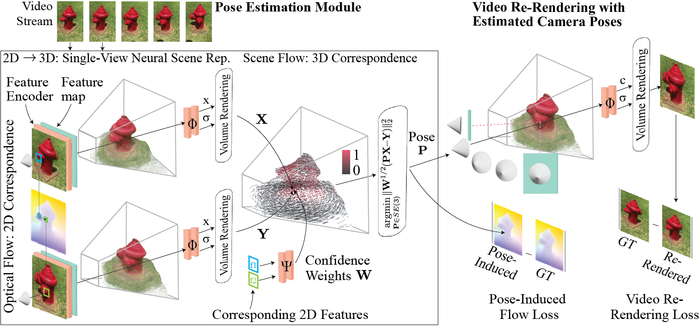

FlowCam: Training Generalizable 3D Radiance Fields without Camera Poses via Pixel-Aligned Scene Flow

The dependence on SfM-computed camera poses prohibits 3D representation learning at-scale.
In this work, we train 3D scene representations without camera poses.
Our method works robustly, even succeeding on the challenging CO3D dataset, where even classical SfM methods struggle.
Our key innovation is to lift optical flow into scene flow via differentiable rendering, and differentiably solve for camera pose via a weighted Procrustes formulation.
Our method is supervised only with optical flow and re-rendering losses.
TL;DR: pixelNeRF trained without camera poses; works on CO3D; ~20fps odometry; outperforms classical SfM odometry methods
Below we show generalizable pose estimation followed by generalizable view synthesis on top of a smoothened and wobbled trajectory. Since our model estimates poses and geometry on small video clips, we apply both our pose estimation and view synthesis on sliding windows of the trajectory. This sometimes yields temporal inconsistencies, though views and geometry are mostly consistent between clips; exploring a mechanism for long-video synthesis is exciting future work.
CO3D Hydrants
CO3D 10-Category
KITTI
RealEstate10K
Limitations
Our method doesn't model dynamics, doesn't robustly predict intrinsics, has no loop closure mechanism, and still operates on relatively short clips.